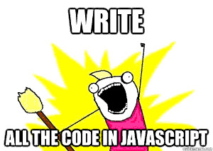

Começando em JavaScript
Até altero algum código em JavaScript, mas nunca aprendi de fato. Aqui vão algumas experiências, de um pequeno projeto que fiz em JavaScript, sem saber nada dele.

O meu amado projeto Test Driven Learning estava um pouco bagunçado, então decidi dar uma arrumada nas coisas e incluir mais uma linguagem: JavaScript.
Pensei que fosse demorar dias, afinal nunca programei com essa linguagem nada de mais profundo, só coisas na superfície, em geral adaptando código pronto.
E saiu, até com testes:
https://github.com/paulohrpinheiro/test-driven-learning/blob/master/000_novice/javascript/problems.js
Minha primeira questão foi descobrir como fazer testes de unidade. Todos os frameworks de teste que encontrei, ou são para WEB ou são para Node.JS.
Eu só queria testar funções simples, em linha de comando usando o v8. Decidi voltar às raízes escrevendo comandos assert. Mas não encontrei tais funções... Pesquisando, algumas propostas:
http://stackoverflow.com/questions/15313418/javascript-assert
https://code.tutsplus.com/tutorials/quick-and-easy-javascript-testing-with-assert--net-14050
Do segundo endereço, adaptei e fiz meu primeiro assert dessa maneira:
function assert(outcome, description) {
print(outcome ? 'pass' : 'fail');
}
Como isso, poderia, por exemplo, verificar coisas dessa maneira (estou usando o comando d8, da bilioteva V8:
$ d8
V8 version 3.14.5.10 [console: readline]
d8> function assert(outcome, description) { print(outcome ? 'pass' : 'fail'); }
d8> assert((1+1)===3, "Verificando se 1+1 é igual a três.")
fail
d8> assert((1+1)===2, "Verificando se 1+1 é igual a dois.")
pass
Isso já é legal, só que com um contador de erros e acertos fica melhor. Alterei para essa versão:
var fail = 0;
var pass = 0;
function assert(outcome, description) {
var r;
if(outcome) {
pass++;
r = 'PASS';
}
else {
fail++;
r = 'FAIL';
}
print(description + ': ' + r);
}
assert((1+1)===3, "Verificando se 1+1 é igual a três.");
assert((1+1)===2, "Verificando se 1+1 é igual a dois.");
print('\nResults:');
print('\tPASS :', pass);
print('\tFAIL :', fail);
print('\tTOTAL:', fail+pass);
if(fail) {
print('FAIL TESTS.');
}
else {
print('PASS TESTS.')
}
Ficou interessante. Continuei na tarefa em que me propus e cheguei a um ponto em que minha especificação exigia gerar exceções ao invés de erros. Aprendi fácil como gerá-las, mas meu assert não resolvia mais a parada toda.
Fui pensando em algumas alternativas, como cercar esses asserts com try/catch, mas não ficou bom. E a saída óbvia, criar outra função que capture a exceção, se houver.
Pra isso eu não poderia chamar minha função passando a chamada das funcções a verificar, eu teria que dentro desse novo assert, chamar a função. Para isso, vamos pesquisar como chamar uma função por referência passando argumentos que não sei quantos são.
Encontrei esse ótimo texto:
http://www.raphaelfabeni.com.br/dicas-rapidas-javascript-2/
Era do apply que eu precisava:
https://developer.mozilla.org/pt-BR/docs/Web/JavaScript/Reference/Global_Objects/Function/apply
Refatoremos novamente o código:
var fail = 0;
var pass = 0;
function doFail(message) {
fail++;
print(message + ': FAIL');
}
function doPass(message) {
pass++;
print(message + ': PASS');
}
function assert(functionRef, functionParams, expected, description) {
result = functionRef.apply(null, functionParams)
if(expected===result) {
doPass(description);
}
else {
doFail(description);
}
}
function assertAnyException(functionRef, functionParams, description) {
try {
result = functionRef.apply(null, functionParams);
doFail(description);
}
catch (e) {
doPass(description);
}
}
function soma(numeros) {
var resultadoSoma = 0;
for(var i=0; i<numeros.length; i++) {
resultadoSoma+=numeros[i];
}
return resultadoSoma;
}
function arrayTemConteudo(meuArray) {
if(!meuArray) {
throw new Error('Erro!');
}
}
assert(soma, [[1,1]], 3, "Verificando se 1+1 é igual a três.");
assert(soma, [[1,1]], 2, "Verificando se 1+1 é igual a dois.");
assertAnyException(arrayTemConteudo, [], 'Gera exceção.');
assertAnyException(arrayTemConteudo, [1,2,3], 'Não gera exceção.');
print('\nResults:');
print('\tPASS :', pass);
print('\tFAIL :', fail);
print('\tTOTAL:', fail+pass);
if(fail) {
print('FAIL TESTS.');
}
else {
print('PASS TESTS.')
}
Executando (salvei como tests.js):
$ d8 ~/tests.js
Verificando se 1+1 é igual a três.: FAIL
Verificando se 1+1 é igual a dois.: PASS
Gera exceção.: PASS
Não gera exceção.: FAIL
Results:
PASS : 2
FAIL : 2
TOTAL: 4
FAIL TESTS.
Um detalhe é que quando devo passar um array como parâmetro, ele deve ser passado dentro de outro array, senão estaríamos passando cada elemento do array como parâmetro da função.
E outro detalhe, é que quando comparando retornos que sejam array, a forma mais rápida, e que atende apenas nesse meu caso limitado, é usar JSON.stringify():
result = JSON.stringify(functionRef.apply(null, functionParams))
Um brinde que veio com apply, foi justamente como usá-lo para passar todos os elementos de um array como se fossem parâmetros indiduais. Por exemplo:
$ d8
V8 version 3.14.5.10 [console: readline]
d8> a = [10,20,1000000000,30,40,];
10,20,1000000000,30,40
d8> Math.max(a)
NaN
d8> Math.max.apply(null, a)
1000000000